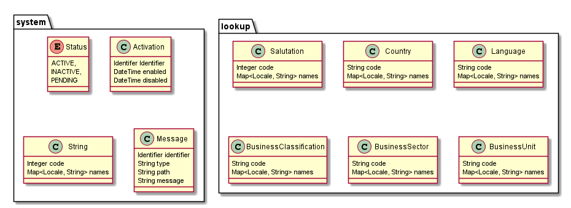
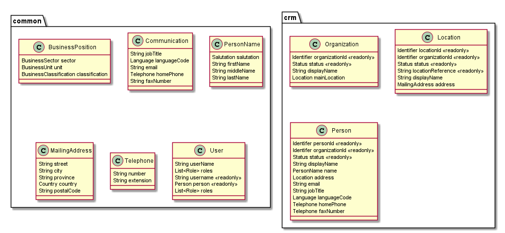
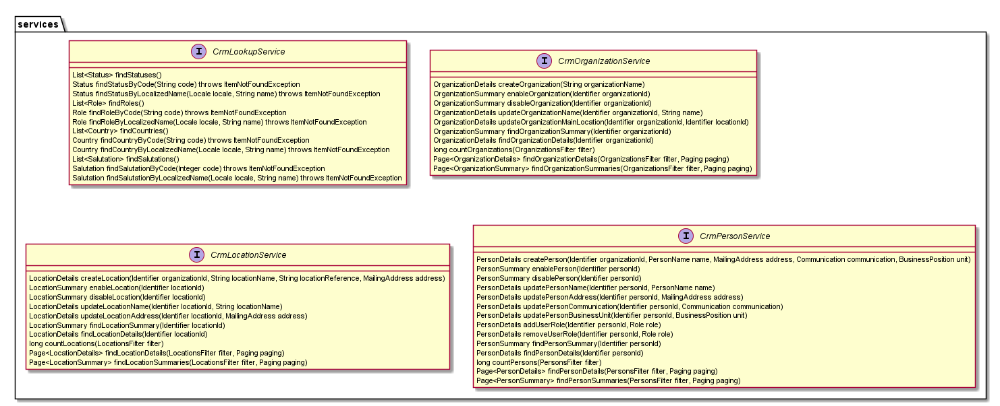
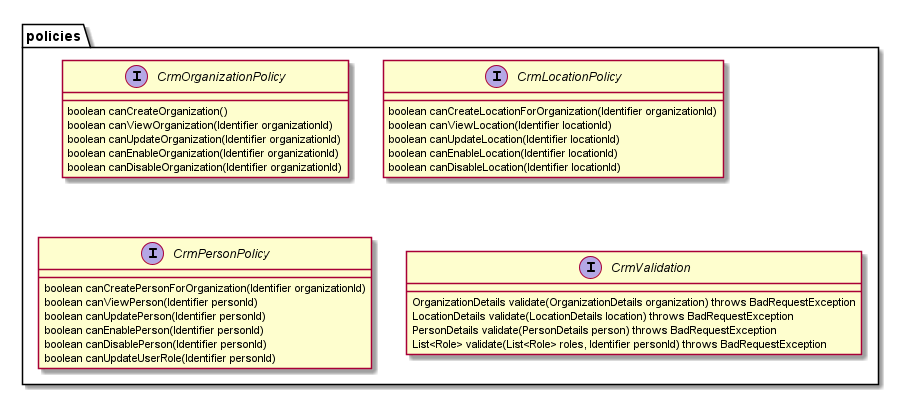

Customer Relationship Management
CRM technologies are used for managing all of our core organization's relationships and interactions. It allows organizations to maintain and keep information about their users and locations up to date and correct in our systems. We currently have multiple applications performing user management which makes it difficult to keep the information up to date and relable.
This can give us a clear overview of all our users and organization in one place - a simple, up to date dashboard that can show an organizations history, and the status of their information.
Models
The CRM system has a few core models that are used internally to help applications run. These do not need to be maintained by the users of the system but are avaliable through the API. There are also some business domain models which are entities that the users can create, update and maintain themsevles. These domain models are modified through the orgainzation service.
   Implementations
I would like to take these simple object models and try various implementations of endpoints to be able to compare each proof of concept. The information in each of these services will be similar through each of our applications.
I think we all have sufficient knowledge of how to implement the service implementation, the design is the core interfaces that will be implemented, I will attempt to build a simple in memory java archive that the endpoint examples could use.
An example RAML documentation.